Archives : 2009-03
狮子男女 @ Mar 31, 2009
这两天睡眠特别不好，睡不着还醒得早。早晨5点多就被敲门声惊醒，邻居家装修运来一车子黄沙，我的车停的不是地方。NND~惨绝人寰的装修！不是说8点才可以开始装修的吗，回到被窝里还在想要不要去物业咆哮两嗓子？
yucheng说现在遇到狮子座都绕道走，女狮子留下，男狮子就算了吧。说狮子座感情强烈、易激动好冲动，空间概念强等等，她周围可是一群狮子座男女，怎么逃得掉呢？我说你女朋友夫妻俩都是狮子，经常吵架吧？“不啊，他们很好的，一个离过婚一个大病过，懂得珍惜了。”人性不容忽视的贱，又一次暴露无疑，非要折腾到伤痕累累才知道如何表达情感。可是吃过有些星座的苦，还是绕道走比较好。
这么寂静无声的夜晚，大家都在看“毛利”吗？
明天娱人节啦，洗洗睡吧，还是被窝里春意盎然啊。

炒*饭 @ Mar 31, 2009
鸡蛋、蔬菜粒、豆豉、干米饭，今天的午餐。
离老头盖浇饭的水平不应太远了吧？
今天没把luke当垃圾桶，吃剩的才给它。
而是第一碗就盛给它了，吃炒饭的小狗。
我一边炒饭一边想毛利的文才真好，我这辈子就只能记记流水帐，人家靠文字混饭吃，我写blog纯粹是娱乐，平衡吧~能追着毛利迷一把，那感觉也不赖嘛。就怕这世上连个喜欢的目标都找不到，才惨呢！
天气又TMD拉着臭脸了，搞得我一点着装的创意都没有。穿了两头小，中间鼓的过膝深烟灰色羊毛裙，白色一字领毛衣，短夹克式机车皮衣，宝蓝色丝袜，黑色露脚踝短帮皮鞋。俺家人说你怎么每次都差不多的pose？“重点是搭配，不是模特，有个人穿给你看你就知足吧~”俺家人又说：“那你买个商店里的模特放家里摆拍多好。”................就这么点爱好也要被剥夺？太残忍了~

7601，毛利 @ Mar 31, 2009
她，纯洁里流露出一点儿色情
她，叛逆里隐藏着一点儿温馨
她的博客，让人一看就会上瘾
她，就是我们欲罢不能的毛利
追她，7601是她的终生的代号
粉她，是我们（douban）小组一生的目标
又是yucheng介绍“看上去很猛”，不由想到我妈的教育，小时侯不让串门、不让吃零食，搞得现在在网络上也很少串门，活了几十年才发现吃零食的乐趣。错过多少好玩的事啊~
象关注女病人一样，在网络上搜索毛利相片，对于喜欢对象的容貌不仅仅只有异性才感兴趣吧，毛利，很符合我的审美，和她不矫情的文字很般配。如果一个女人写了一手好文，长着一张与时俱进、既妩媚又个性十足的偶像面孔，并且，她的文字里没有所谓文学女青年的拿腔捏调、矫柔造作，字句干净利索，略显阳刚之气兼有细腻敏锐犀利的表达，让我等伪文艺青年们会不顾一切爱上她！
这两天看多了欲擒故纵、犹抱琵笆半遮面的小品，乍一看到毛利的“正面大头照”，心中大叫一声“爽”，自信又勇敢的7601就这么“正面、清晰、赤裸裸的”看着你！喜欢一个人，还真是综合的，文字占主要部分之外，形象与性格恰恰符合你心中的想象又会获得更大的愉悦~

草莓．新鲜 @ Mar 30, 2009
晚上到姐姐家拿药和蔬菜，回到家才发现比自己列出的蔬菜还多出好几种，有姐姐真好：）晚饭打包了马台街的老头盖浇饭，吃得那个饱啊，数了下“盖浇”有六种搭配：芹菜、包菜、胡萝卜、豆腐干、皮肚、猪肝，琢磨着什么时候自己也做一次试试。
老远看到姐姐坐在水果摊上挑东西，这些小小的草莓比大个头的草莓要好吃一百倍，尤其是姐姐亲手挑拣的。姐姐象妈妈却超越妈妈对我生活的细心关照，婆婆妈妈有什么不好？生活不就是这样婆婆妈妈才过得细致么？心情象这盆草莓一般新鲜水灵在泛着淡淡春天气息的夜晚。要是我以前也能这般体会生活就好了~
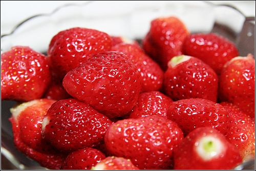

MOS的挂件，还崭新的摆放在首饰包里。
上面也有一颗漂亮的草莓。
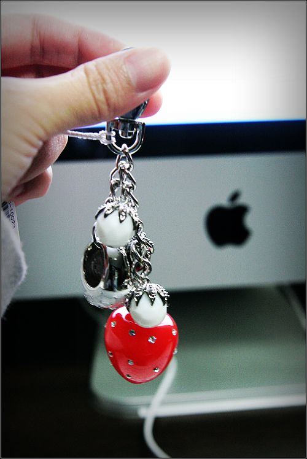
星期一 @ Mar 30, 2009
恋人就象孩子，越被管教，越会撒谎。
越限制......越显露自己不自信。
越被粉饰的越具有一定的虚假性。
中午的千张条炖咸鸡腿肉。
注意！主要是盛菜的碗。

周末两天过得真是混沌，啥事没干一晃眼就过去了。星期一的早晨睡眼惺忪爬起来上班，对的，天气一下子又开朗了，只穿了羊毛裙＋长针织外套，不穿大衣也能出门。
下午，又是会议........

有意思 @ Mar 28, 2009
睡到下午三点才起床，躺被窝里看了两部碟：《007系列22 Quantum of Solace 》和《Seven pound》。哎呀，第二部让我抱着枕头哭地淅沥哗啦，不划算。Will smith怎么老演善良到极致的角色呢？作者说他参加party时遇到一个年轻人，表情非常悲伤，有很重的心事似的。和这个人聊到半夜，原来他遭遇一次车祸，死了7个人。回到家作者就想这是一个很好的题材，可以写成剧本。于是这部《Seven pound》就诞生了。感觉这部片子在教授自杀的人在自杀前捐献自己的器官给仍然想要生存下去的good people。我想我要是患了绝症，也捐献器官给需要的人，然后将骨灰抛洒在江河湖海，绝不在这世上占用一块土地...那么，现在除了听天由命还要尽量快乐地活着...不好，暴露故事情节看起来就不好玩了。这是感动之一；
有意思之二是每周五晚上7点多钟湖南卫视节目“天天向上”，特别好看。连续看了三周。这周选了若干北大外语女生和复旦诗社男生，归归，90后的男生女生比俺们20岁时出趟多了。当诗社男生对自己选择的北大某女生朗读名人诗词时，我浑身的毛孔象花一样绽放，有几次甚至红了眼圈....这昔日黄花也会被打动的啊，更别说那些青涩懵懂的小女生了。里面那个小主持人“欧弟”很讨喜，讨厌汪涵被众星捧月般地每每出来主持，搞得跟江湖黑社会老大似的。
有意思之三：3点起床，4点接到确认参加婚礼的电话，这已经是第二次确认是否可以在6点前到达婚礼现场。无形的压力让我出了门就拼命开，天晓得居然绕了很多路才到，连红包上都没来得及写上祝福（我是不是要告诉新郎我送了多少礼金呢？）。又一个巨大婚礼，好象有4、50桌宾客，看着当年进公司的阳光帅哥30岁后终于不再孤单，且在婚礼上何止是兴奋，简直就是亢奋....悲欢离合终有期，总有属于他的幸福到来。在他极具责任感的肩膀上又担负起一个新家庭，他的母亲、他的妹妹和他的新娘。
本打算穿这件中袖毛衣去参加婚礼，却被这副手套的质感cancel掉了。

最终决定复古一把，选择了蝙蝠袖、塌肩的黑色薄毛衣+羊毛蓬蓬裙+立领肩章式修身短羊毛大衣。头发两天没洗，不蓬松啊？托人在纽约买的Coach项链，最近尤其喜欢金色饰品。

复古风的格子丝袜和高跟鞋。在上海时遇到一双灿黄的长统袜，很喜欢，可那是最后一双样品，没买。如果今天换成灿黄的样品袜，可能效果更好些？
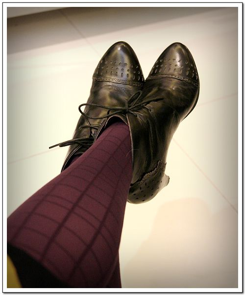
打包了婚宴上剩下的羊肉棒给LUKE，安抚一下他独自在家的小心灵。


拉着阴霾脸的天气 @ Mar 27, 2009
拿了研发的相机拍的，这不是和女邻居用的Canon 30D一个型号么？是不是和俺的350D有区别呢？区别肯定有，但这张相片上没看出来~一个套头下的周末办公桌，透着轻松不了的气氛，拉着阴霾脸的天气，让人高兴不起来啊~办公桌的正面尚算整洁，侧面......就不说了。
有个朋友刚买了5D，给我看5D拍的人像，效果...那真是...跨...时代的飞跃，不晓得这次飞跃是相机原因，还是他的水平提高了？亦或是相片里的神仙MM太脱俗了？有人说借他的5D玩玩呀，我就不愿借，坏了怎么办？可有人恰恰相反，说用借来的高档镜头不心疼。原来人类是这样思考滴？我说相机怎么好意思借别人的呢，言下之意是想说等将来某一天我真的换了无敌兔，你们谁也别向我开口啊。
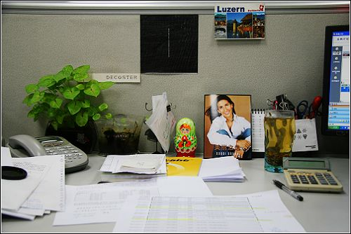
春节买给自己的礼物，一颗胸针。

走还是不走，莫改初衷。 @ Mar 27, 2009
我们习惯打一份体面的“工”，找一个门当户对的爱人，过一种“家-地铁-公司”三点一线的生活。偶尔有一点点不甘心，左顾右盼，但叛逆的力量太小了，口中尚要抱怨几句，而双脚，始终如一地踏在“回家的路上”。
美国有个叫Christopher McCandless的年轻人。从名校毕业，放弃了优渥的工作，把自己在银行里的2.4万美圆悉数捐给慈善机构。他自己，就背着一包米，一本小说，一张破旧的地图，一枝猎枪，徒步进入阿拉斯加的荒蛮之地。这个真实的故事被肖恩.潘拍成了电影《荒野生存》。且不论最终的结局，他毕竟是冒了天下之大不韪，选择完全听从自己的心，堂堂地走在了“离开的路上”。
无论走在“回家的路上”，抑或走在“离开的路上”，都是值得被祝福的选择。只是那些总在十字路口问自己问别人“走，还是不走”的人；那些被车水马龙席卷着跌跌撞撞向前的人；那些越来越容易暴躁，越来越享受不到过程之愉悦的人，究竟是本着自己的初衷而去？还是在随波逐流呢？人生是可以随心所欲的，那不是挥霍；时间，是该“浪费”在一切自己所钟爱的人事物上。但不该随波逐流，这才叫挥霍。时间，无端地流逝掉，激不起丝毫涟漪留不下任何回忆。
奈良智美曾经在个人画展的墙壁上，贴满字条，上面写着：“我不想忘记初衷，不想让初衷只是形式的东西。即使全部崩坏了，也想要依附在那个时候那个心情旁边。”无论如何，别在途中轻易地将自己的初衷弄丢才好。(作者：施雯)
风尚词汇：Soit aller,soit rester
以往传统观念里的法国人，个个懂得享受生活，爱度假爱罢工，坚持自己的初衷，用自己喜欢的节奏过好每一天。现如今的法国人也被激烈的竞争逼成了“急性子”，尤其在开车的时候，一旦遇到前面人开得慢，挡了他的道，便火冒三丈。动不动就把这句话挂在嘴边：“Soit aller,soit rester”，即拼命地按喇叭，问：“你走还是不走啦！”
大多日志不是以天气开始，就是以天气结束，千篇一律。
今天，阴有阵雨，气温8-11度？
在复制的每一天里，我们当然要走，只是好象已经忘记了自己的初衷......

小二黑做客 @ Mar 26, 2009
她又来我家做客了，恰好炖了猪手黄豆汤，可以分享给两个小家伙吃。那么渴望的眼神，完全出自对美食的期待。小黑每次来会毫不客气喝光LUKE的水、吃光LUKE的狗粮。这一次乖乖的坐在厨房里看我忙碌的洗菜烧菜，孩子稚气的表情，让人怜爱。
从前羡慕别人养大狗，曾梦想以后有条大狗陪伴，可是从小黑来做客几次之后忽然觉悟：养大狗不是轻松的事儿。她的尾巴来回摇摆，打在家具上噼里啪啦地响，打在人的腿上也一定不是鹅毛拂过的感觉。大狗喝完水滴在地上的面积一定比小狗大，如果它还很调皮的话，你的噩梦这就上演了。所以，地方不够宽敞，手头不够宽裕，精力不够充沛，想都别想，还是养小狗狗吧！
水足饭饱来个芭蕾交叉手位，每每都是这样优雅：）
与她在家里便便的行为相比实在是让人大跌眼镜。
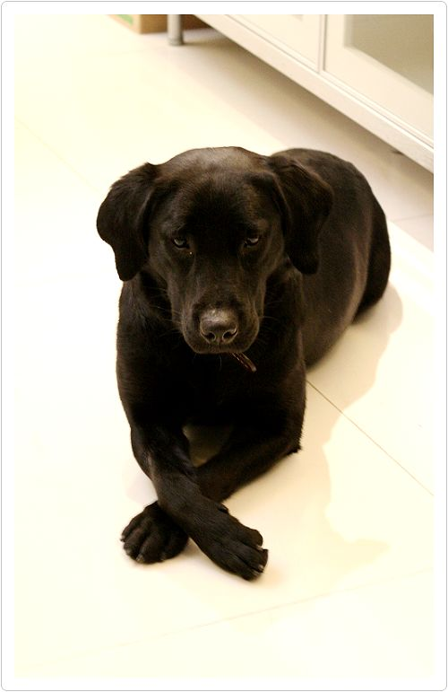
这面孔怎么看也不象一位MISS，还是我家妞妞长的纤巧。
这副傻呼呼的样子，吃起东西来可是很细作的哦，抿着小嘴在你手掌里吃东西，怪痒痒的。
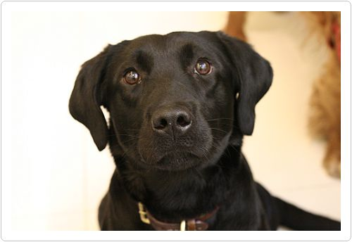
LUKE反应总是没有拉多快，即使这般警惕地盯着食物，也一定是小黑抢到嘴巴里的。

**今天食欲不好，眼睛有点疼；
**从卓越上定购4本书，太想接着看“简妮”了，上次定书卓越网居然没货，当当的网速慢到无期限地等待。这4本书也许下周一才能到，期待ing~两周半时间看完两本书，速度挺快吧？洗完热水澡、睡觉之前，是被窝里幸福的读书时光；
**咖啡色皮衣+米白色羊毛裙+咖啡长袜+咖啡色长靴，因为那一片米白色似乎有点奶油巧克力的效果？从前排斥咖啡色，年纪大了却渐渐对这个色系有了好感；
**洗头后的第二天，头发才服帖些，看来得将洗发安排在晚上，睡一觉头发就不会“轻舞飞扬”了。
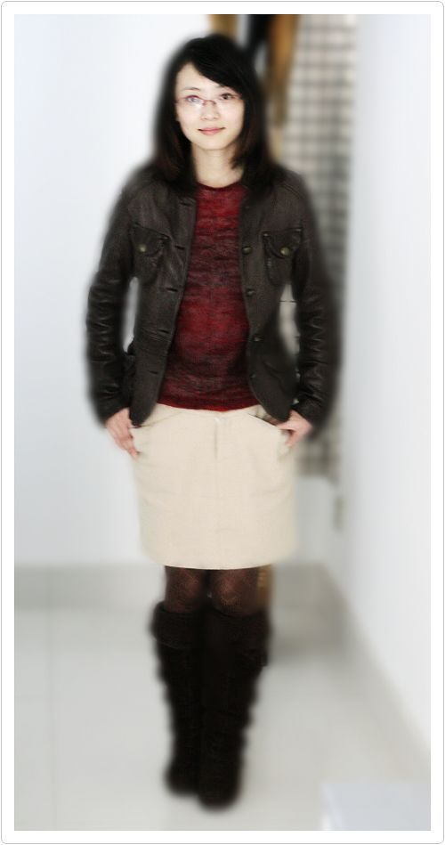

这．窒息的热情 @ Mar 25, 2009
能听到自己的心脏砰砰砰地跳着，听那个女邻居说了无数的话，我只有“恩啊哦”的份儿。偶尔也遇到说话连珠炮的人，压根插不进话去。可能10年前我也这样，不停地说话，害怕沉默，表达热情，一旦不说话便不知所措。难道是自己变了？舌头在口腔里紧紧收缩着，脸上挂着附和的不真实的笑，我，很久没有面对面听别人说那么多话，也很久没说那么多话，这让我感到头晕，感到不清爽。究竟哪一种是病态的自己呢？
当自己处于极度热情的话语状态下，希望对方能回应相同的热情来对话。可是迅速上涨的热情却会很快跌落，从喜欢到不喜欢也是一瞬间的事儿。那么，对方也有可能一下子就厌恶我吧？罢了，的确失去某些兴趣和欲望，还是赶紧洗个热水澡，钻进被窝，酝酿出昨天文学故事里的温暖和辛酸来感受小说的结尾。《慢船去中国．范妮》花了一周半时间阅读，今天晚上可以全部结束。明天，又可以恢复无语的自我世界，我需要的世界。
学习 @ Mar 25, 2009
下午党员开“深入学习实践科学发展观”的动员会，会议还没进行到一半，位子已经空了1/3。这就好象演戏和看戏的关系，演戏的一定得演，看戏的拿到票未必去看，也不会有什么约束和惩罚。当大人真是太好了，不去开会也没关系，小孩子一定不敢的。如果小孩子不去参加学校的会议，你会对他/她说什么呢？象《慢船去中国》里吓唬小孩子的话：“不听话，不听话就把你扔到国外的大街上去。”
我一同事正在积极参加党外积极份子的培训，好象围城，进来之后或许也是面目全非？据说国资委统计今年第一季度出口下降50%，大家要捂紧钱包撑过这个冬天。可没见饭店和商场的人少多少，一点看不出危机四伏的状况，难道这些人头攒动的都是公务员？每次开会都觉得台上的人...挺累的，而往常那个愤怒的小青年修炼成“酒肉穿肠过，佛祖心中留”？我居然坚持听完发言，还能保持平静、不烦躁，心里的那盆水任谁来搅一搅都可以，渣滓总要沉淀在盆底的，休息，休息一会儿好了。
弄了件豹纹衫穿，尝试一下。
这张有点“兑奶风”的效果了吧？
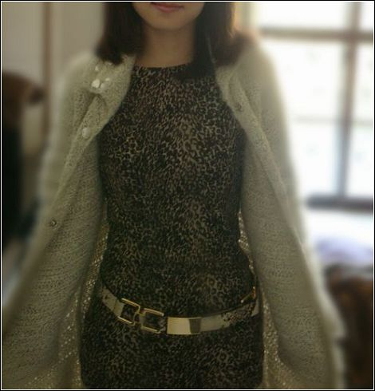
毛靴子呼应一下毛茸茸的长毛衣。

狭长的办公室走道也许可以提供干净的背景。
Macallan Fine&Rare 1926 @ Mar 24, 2009
吴宗宪《我猜我猜我猜猜猜》2009春节前那期，介绍了一瓶非常贵的威士忌酒：Macallan Fine&Rare 1926，据说世界上只有38瓶这款酒，每瓶的价格为360万台币，由38人分别购买收藏，其中只有两人开瓶，大多数人均以收藏为主。2002年在英国举行的一次拍卖会上，一瓶“Macallan 1926年”（1986年装瓶，60年酒龄），拍卖成交价高达20150英镑，折合人民币达到30万元，突破全球威士忌单瓶拍卖历史最高价纪录。
威士忌拍卖是一项新生的国际化活动，有人统计过，在全球威士忌拍卖市场上，麦卡伦占拍卖成交总价值的21%，已成为全球威士忌收藏家的首选投资品牌。要投资，买Macallan威士忌吧！
八卦完这篇惊叹酒价的blog，我也要看书睡觉去了。
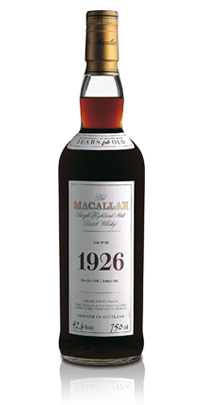
性感．午餐 @ Mar 24, 2009
一看就知道是陈曼作品，不由对what for制鞋公司产生些许好印象，花钱把艺术创作用在商品包装上，的确为提升品牌形象加了分。这样的性感卡片，不知道成本是多少？所以没舍得将这个性感女郎随同鞋盒一起扔掉。
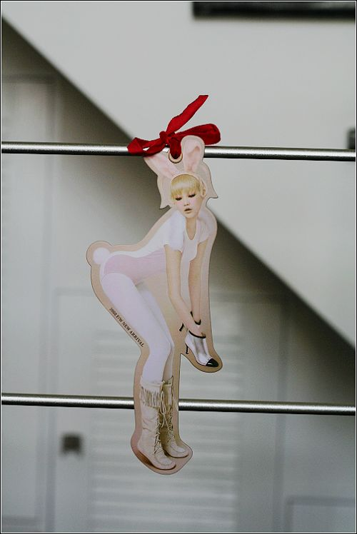
停电，电饭煲没法用。
午餐只能吃方便面，加两只营养鸡蛋。
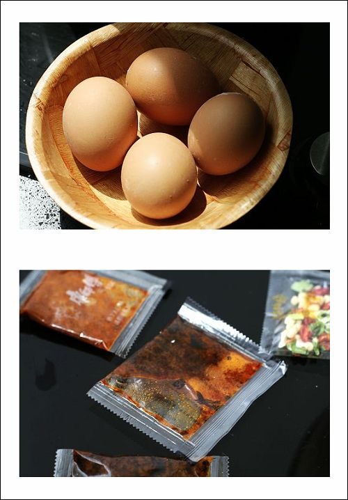
这．神奇的季节 @ Mar 24, 2009
天气热得可以穿衬衣。
然而......然而大家忽然就掉进冰窟窿里了。
太神奇了，这季节。
昨天半边牙床酸痛，接连的喷嚏，看小说看得昏天黑地。
第二天，这个臭美的女人铁定要穿裙子去上班，“感冒”居然神奇地消散了。
按照“IN”法则，将上衣塞在羊毛裙下面，豹纹腰带在一片黑色中闪耀。


清冷的星期天晚上 @ Mar 22, 2009
在光光blog上听到Childs的《Yui》专辑里的“Mariana”，听起来会以为是Lounge，而Allmusic网站将其归类为Pop-Rock风格，还是认同权威的归类吧。Childs是墨西哥的二人乐队，同时他们还是日韩动谩迷。这首电子风浓郁的Mariana，旋律动听流畅，弦乐较重，象这个周末的天气一样，雷电交加，深灰色的白昼，经历一场高速而悲伤的电影？这样的音乐多么适合于清冷的星期天晚上啊~有人说这张专辑里的“Ian P”最好别在深夜藏着听，会流泪。
前年公司体检，我的白细胞查出偏低，其他血常规正常。白细胞降低可能抵抗力也会降低吧？一直没弄明白是什么造成白细胞降低的，不过今天读到一则文字说汽油中含苯，长期开车应多化验血常规，若白细胞明显下降，说明对苯敏感，要十分小心。
我还染上睡前吃东西的坏习惯，而且特别想吃，不吃会觉得饿。
专辑名称：Yui
艺 术 家：Childs
音乐类型：Electronica、Post-Rock、Indie Pop
发行公司：Static Discos
发行时间：2006年10月17日

一声叹息 @ Mar 21, 2009
看到这则“自驾欧亚”消息，五脏六腑都难过极了。很想参与这么有意思的活动，哪去弄两个月的假期呢？身体也未必受得了...

从中国上海自驾车到德国汉堡：
出发日期： 2009年7月8日
§参加队员：60至90人, 30辆轿车或者越野车
§线路节点： 中国上海 – 西安 – 乌鲁木齐 – 霍尔果斯口岸 – 哈萨克斯坦 – 吉尔吉斯坦 – 乌兹别克斯坦 – 俄罗斯 – 黑海 – 土耳其 – 希腊 – 意大利 – 奥地利 – 德国汉堡
§行程 56天，18000公里，探访 10个国家，60多个城市
§* 56天穿越18000公里时空
§* 从上海到汉堡, 用车轮丈量当代丝绸之路的长度
§* 瞻仰古人留下的世界人类文化遗产
§* 为上海2010世博会喝彩
§* 一路撒播友谊的种子
§* 探险，考察，体验，参与
§* 将古代陆上丝路和现代海上丝路连成最完美的圆
这是2月28日在上海拍摄的世博会吉祥物，有人说象牙防组织的标志，有人说象计划生育用品的标志....这是一汪水吗？海洋、河流、小溪、我们喝的水的象征？
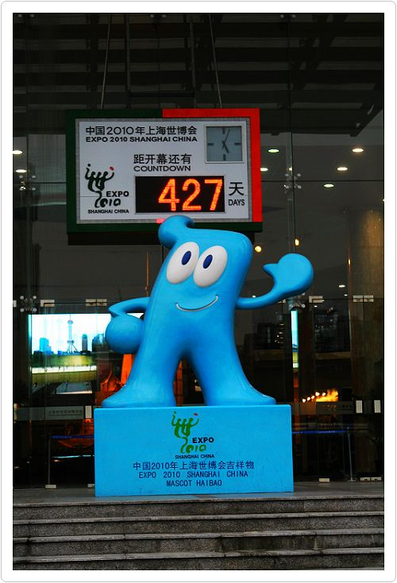
这．春色 @ Mar 20, 2009
春．色．满．园

换．岗

日系赝品．兑奶风摄影

日系．兑奶风 @ Mar 20, 2009
连续从三位女性blogger的站上看到她们模仿的日系摄影。
对于日系风格摄影不拒绝，目前也不确定是否喜欢。
看过一些日系摄影作品，对“日系和风”（有人称这类风格为“兑奶风”）总体印象是“欲擒故纵”，看多了会怀疑自己的眼睛得了白内障。总有一层朦胧的白雾在眼前挥之不去，掩饰了物体原本的真实色彩，这和日本式礼貌大相径庭。与之相反的动不动就要锐化处理的相片也特别具有不真实性。当然，这种白内障式的和风摄影可以很好表达闷骚的情怀。如果有人爱上这种风格的作品，不妨到“堆烟”的文字中学习一下摄影和PS技巧，anyway，have fun~
***原文来自douban堆烟“日系清新淡雅风...”
日系清新淡雅风，即和风，是日本摄影师多采用的一种特色影调。特点可概括为：冲淡平和，自然写意。 国内知晓率最高的为川内伦子、小林纪晴等，其清澈的近乎悲戚的风格，在国内吸引了大量拥趸。当然亦有众多厌恶者，将其讽为“白内障疵光拍法”……各有所好吧。
***日本人的摄影网站：“ 日本摄影人们”
***2007年我在日本拍摄的“东京”，一座缺氧的城市，离开那里后我的呼吸才顺畅起来。
***川内伦子作品：
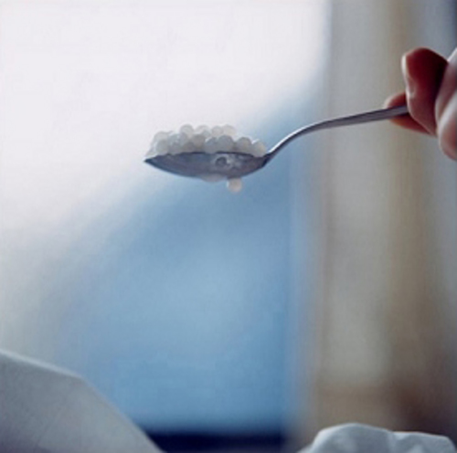
褪去冬天的味道 @ Mar 19, 2009
我今天真好闻，呵呵，用了新香水，淡淡的象是刚从浴室里出来..的清新。
褪去冬天的味道，真正沐浴在暖暖的春光里，昨天晚上挑选了这款CD的香水：

为头发配备了这款法国Furterer的牛油果深层滋养精华素：

长衫需要打底裤配，露出漂亮的脚踝，配上各式鞋子。
买了两条象长统袜那么紧的打底裤，这个春天我会不会变成健美操运动员的形象啊？

穿上花衣裳的春天:)
冬天买的无袖连衣裙，穿过一次。那时天气冷，裙子粘在腿上很尴尬。
这时候穿正正好，不冷不热，搭配粗犷的皮衣平衡过分的女性化。


茶上有个人让帮忙宣传一下新开的淘宝店，地址：http://shop.sing-ring.com，自己把关哦，纯粹友情支持。
遛狗 @ Mar 17, 2009
遛两只狗和遛一只狗的区别在于遛狗人的感受，尤其一只拉布拉多犬在自己身边闲庭信步，个头儿比luke大，不象luke始终迈着旧社会丫鬟的小碎步，低着脑袋一路在地面上搜索，一副劳苦大众的形象。两只狗一起有气势，有安全感。遇到别的狗狗发飙，它俩会一起上，luke也不会被大型犬明目张胆地欺负。它俩见面时热烈地纠缠在一起，象两个老熟人见面，欢乐地说：“你好啊，又见面啦！这个傻女人又要带我们出去疯啦~”
听拉多主人常说它在家里啃家具、啃拖鞋、咬电线，随地大小便，不得不把它关在笼子里，中午也没时间回来遛它。一只经常被关在笼子里无人陪伴精力旺盛的狗狗，一旦放出来多少有些神经质，狗狗的情绪和人一样需要疏导和安抚。人类的精神疾病已经跃入10大死亡疾病之列，人类尚且如此，动物们也不会幸免吧。反正我中午要遛狗，出于对狗狗的同情，顺便帮他们一起遛了。
拉多与Luke相比能更好地与人交流，听懂你要她做什么，能让人不喜欢吗？中午把她带回家，她居然吃了两盆皇家狗粮+一盆菜拌饭，是我家luke三天的口粮，luke吃东西拉多从不抢，动物世界也有男尊女卑？
本以为充分地在外面遛过，不会在它家里便便了吧，事与愿违，依旧是便便满地。晕啊，一位千金小姐，好歹一年两个月已经成年，怎么不知道讲究卫生呢？暗自庆幸，luke是只爱睡觉的狗狗，不会啃家具，基本我不在家它都在窝里睡觉，卫生习惯又好，省心，这个好孩子要好好疼呢。据说拉布拉多犬一岁半以前是魔鬼，一岁半以后是天使，拉多的爸爸妈妈就快熬出头了。

中午的太阳还不能称得上烈日，可还是要戴上帽子出去。花朵刚经历过连续风雨，这会儿又要接受干燥天气的考验。春天的柔情究竟在哪里？恩，应该是傍晚吧，傍晚遛狗最最舒服，空气中满是往年这个季节里熟悉的味道，激发出熟悉的记忆，不确切究竟是什么，但就是那么温和而又熟悉地徘徊在身体的触觉中。
文艺小青年：Zakky @ Mar 17, 2009
蚊子收养的流浪可卡Zakky，据说吃白米饭就可以养活！瞧人家的发型多文艺，躺在洗脸池里，带着诡秘的，意味深长的笑，还有谁比它更文艺呢？
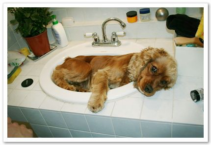
*春* @ Mar 17, 2009

眼睁睁地看。。。 @ Mar 16, 2009
Luke终于一改以前的胆怯，睁大眼睛看人了。
它喜欢一只白色高贵的萨摩耶，别的公狗想要亲近它喜欢的萨摩耶，Luke会疯狂地将对方驱逐，即使它的体型只有对方的1/2大。狗狗的一切都与原始欲望联系在一起，吃喝拉撒睡，出去玩，追逐喜欢的异性，在她面前做出各种奇怪的小样儿，逗她开心。青年的Luke发起嗲来，真是。。。别看它一副小老头的摸样。
我在去上海的火车上，便开始想它了。

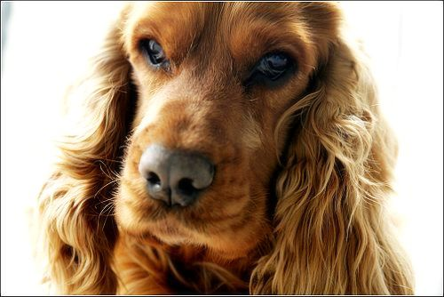
这对我来说就是短发。
喜欢头发看上去很多很多的样子。
就象喜欢浓郁的，很正很正的颜色一样。
头发上半部分是新鲜的黑色，而下面则因为染发烫发的缘故有些枯萎。
为什么不继续黑色呢？我是那么喜欢黑色。
以后要多多保护健康黑色的头发。
今天得知33岁女演员李钰患淋巴癌去世，医学专业人士说每个人体内都带有癌细胞，如果没有充足的睡眠、健康均衡的饮食、良好的卫生习惯和自我调节情绪的能力，在抵抗力下降的时候癌就会发作。李钰的病和生活不规律，经常染发烫发有关，是这样么？而且经常感冒的人也要特别注意。
有个女朋友将烫发染发一起做了，头发烫的不满意，生气地去超市买东西。一位老先生目不转睛地看了她好久，恶狠狠地说：“中国人的黑头发最漂亮，我是医生，你知不知道染发会致癌啊？”本来就生气的她，听到这话差点哭出来。

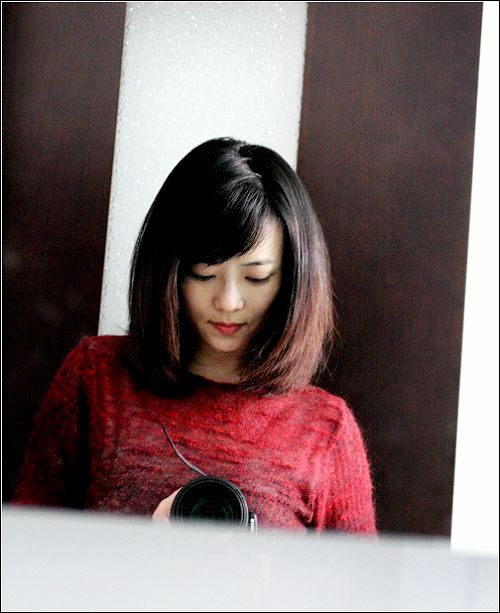

天黑，周末这才开始。 @ Mar 15, 2009
乘火车到达上海已经是下午一点多钟，正好Angie搬家，忙碌了半个下午，两个人才出去吃了点东西算是早午饭。接着去海涛剪发，保守地剪到肩膀。理发师问：“不可惜么？”想想自己的头发长得快，没什么可惜的，剪就剪了吧，越来不在意外表如何，心里琢磨：这难道是要迈入中年的征兆？而我的心里怎可以如此平静？这在以前会象一场地震给我造成的影响啊。对小麦同学的话特有共鸣：以前觉得重要的事情，现在觉得完全不重要；以前觉得不重要的事情，现在觉得很重要……
头发剪了之后看上去精神多了。忙完这一切，打车到上海大剧院，周末这才开始。


《恋爱的犀牛》由中国国家话剧院演出，是廖一梅写的第一部话剧，也是演出次数最多、版本最多的一出戏。廖一梅说：“这是一部任性的作品，是年轻的，荷尔蒙过盛，是燃烧的火焰，不分青红皂白的火焰，直接而坦白，无所谓克制和羞涩。”我想我们都会有这样一段没有逻辑、疯狂而痛苦地不顾一切去爱的经历，“忘掉是一般人能做的唯一的事，但我决定不忘掉她。”显而易见的年轻，丝毫不理会这“不忘掉”引发的巨大痛苦和长时间的困惑，如此决绝。记得有句台词大致是这样的：如果你没有勇气面对真爱，你可以找个伴儿结婚，但是千万别说“爱”。还有句特幽默的台词：拿着菜刀砍电线，一路火花带闪电。
剧院里安静得能听到我吃巧克力豆的声音，恰好我坐在第四排最边上的位置，两位着长大衣的剧院工作人员就站在我旁边，如此危险的条件下，我还是举起相机仓皇地拍了四五张剧照。得到两次警告，警告不要吃东西，不要拍照。尴尬！怎么就沦落到被警告的观众了呢？吃巧克力豆是太饿了，而整个下午都没摸相机的我，又如何能错过演出？大概上一次看话剧欢畅地拍了整场也没有得到一个警告，而这次地下工作没成功。就在水幕从台顶倾泻而下时，场内的闪光灯开始噼里啪啦地亮起来，纳闷，闪光有屁用？拍出来是暗的，单反才是硬道理。在管理员四处制止的混乱中，我又抢拍了两张。
话剧前段进展缓慢，Angie想睡觉了。不过渐渐精彩，过电的感觉数次掠过全身毛孔。如果剧场能唤回你的回忆，呼应那些心底的渴望，剥掉那些让心灵和感官变得麻木的，被生活磨出厚厚的老茧，让你重新感到柔软和冲动，你会知道，生命的本质就是这般无遮无拦的，勇敢的，坚强的，多情的。


散场后的晚上有些冷，饥寒交迫地跑去避风塘吃晚饭。
为了健康要多吃点，再多吃一点。


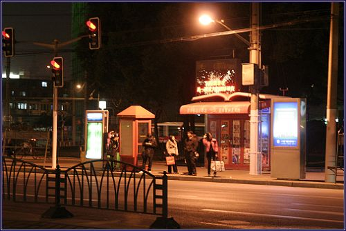


有意思 @ Mar 13, 2009
从访问记录里发现这些有趣的数据。
部分连接茶的网址；
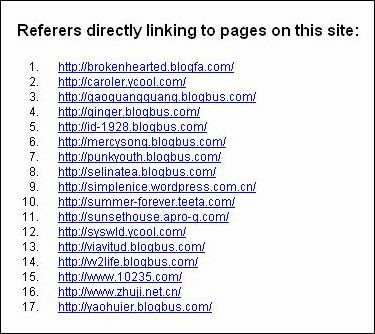
下图是茶在某站上测算的价值USD3066.00，从数字上看就一点点啦，从意义上讲还不错。
出于好玩，键入我们公司的网址，净值是USD1832.30，点击率 4237778。
可登陆这个网站测试一下你的BLOG：http://www.websiteoutlook.com/

悲观主义的花朵 @ Mar 11, 2009
这个周末《恋爱的犀牛》就要等着我去膜拜那些“经典的台词”了，上个月Angie定了两张票。她说已经看腻我的发型，让我这次在上海把头发全剪了......其实我自己也腻了，常拿发卡把刘海夹成奇形怪状，难怪有同事说：“你怎么这么个发型啊，最近怪怪的。”其实不需要剪，它也会象落叶一样凋零。
听yucheng说在上海的剧院里看到过廖一梅，安静而低调的站在幕边，面带微微的笑，清新可人的摸样，一点不起眼。yucheng是带着妈妈、外婆和丈夫一起去看的这部话剧，看完后她的妈妈快乐而满足。据说《恋爱的犀牛》演出十年来，这次是改编后的新版，虽说不再是大牌演员出演，想到能亲耳凝听并感受那些所谓的经典台词，便渐渐兴奋。如果你也想体会一下这部话剧的经典，3月27日-3月29日他们还将在杭州大剧院演出。
每每要跑去上海看喜欢的节目，才体会到大城市的优越之处。本来，对上海是万万没有好印象的，受了yucheng这个土生土长上海人的影响，逐渐转变看上海的角度，并且为陈丹燕笔下的上海女子套上yucheng的形象，实在是想象不出还有哪个上海女子更符合的了。四月本来有一场OASIS在上海的演唱会，等我在网上定票时才发现已经开始办理退票了，是因为他们支持藏独而被迫取消在中国市场的演出吗？
看话剧前先热个身，捧着廖一梅的小说《悲观主义的花朵》看了看。真巧，在所有鬼怪中我最喜欢的也是吸血鬼。那些插图是某网站某00后小女孩写真，除了鬼秘，惊悚，颓废还有血腥，没忍心放这里血腥的。这组写真的一部分还是挺酷的，我爸妈如果给小时候的我整这么一组相片，成年后我就给你们看，让你们羡慕死我，那不仅仅是酷，简直就是重金属摇滚的童年！事实上我的童年照片还真少…孩子都这么拍写真了，赶明我们是不是就可以创意地叼着奶嘴，半裸的垫着尿不湿出现在写真集里了呢？谁不怀念童年啊，尤其经济不好的时期，有人管吃管住，想玩就玩想睡就睡，还不用上班！童年简直是太酷了！

摘抄自廖一梅的小说《悲观主义的花朵》：
为爱而生，很多人这样标榜自己，为爱而生？不，我不为爱而生，爱是我躲之不及的怪物，是人生对我抛出的媚眼，顾盼有情中生出的一点眷恋，是这世界将你抽空、打倒，使你放弃尊严的唯一利器。别大言不惭地谈论为爱而生吧。
我们一生中总要遭遇离开心爱人的痛苦，那可能是分手，也可能是死亡，对此即使我们早有准备也无力承当。人类唯一应该接受的教育就是如何面对这种痛苦，但是从来没有人教给过我，我们都是独个地默默忍受，默默摸索，默默绝望。
我知道我终将老去，没有人能阻止这件事的发生，你的爱情也不能。我将从现在起衰老下去，开始是悄无声息地，然后是大张旗鼓地，直到有一天你看到我会感到惊讶----你爱的人也会变成另一个摸样。
我们都会变成另一个摸样，尽管我们都不相信。
我们从年轻变得成熟的过程，不过是一个对自己欲望、言行的毫无道理与荒唐可笑慢慢习以为常的过程，某一天，当我明白其实我们并不具备获得幸福的天性，年轻时长期折磨着我的痛苦便消逝了。
“凡是改变不了的事我们只能逆来顺受。”我们的需求相互矛盾、瞬息万变、混乱不堪，没有哪一位神祗给予的东西能令我们获得永恒的幸福。
对于人的天性我既不抱有好感，也不抱有信任。
生活的真实性都值得怀疑，其他的就更别说了。
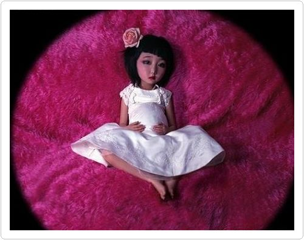
......我惊讶地发现，从小热爱的那些诗人作家个个放荡不羁、道德败坏，被人指责为寡廉鲜耻。第一个是拜伦，然后是王尔德。
......总之，我是一个不能确定的、勉强可以被称为好学生的人。这勉强已经预示了我将开始摸棱两可、左右为难的人生，准备遵守世俗的准则，而在内心偷偷爱着拜伦和王尔德，渴望与众不同的生活。
“犯罪不是庸俗，但所有的庸俗都是犯罪。”
“只有特别之物才能留存下来。”特别，就不论善恶。我寻求特别之物。
“我不仅要做一个恶棍，而且要成为一个怪物，你们会宽恕我所做的一切。换句话说，我要把你们的衡量标准变成荒唐可爱的东西。”
这是我知道的、最令我颤抖的豪言壮语，在一百年以前，被最优雅的人用优雅的态度说出，比长发愤怒青年的重金属喊叫更对我的胃口。
......“可以理解，道德败坏的人没有禁忌，更加有趣。”
“有趣”----我努力想追求正确的生活，实际上却一心向往有趣的生活。但我既缺乏力量，又不够决断，追逐这种并不适合于我的生活的必然结果是痛苦多于欢乐。但那时我坚持相信那个“白痴”公爵梅希金的说法：“她的眼睛里有着那么深的痛苦，是多么美丽啊！”

确立某种生活准则，并有勇气去坚持这些准则是必要的。可惜大家通常既无勇气坚持善，也无勇气坚持恶，甚至没有勇气坚持随波逐流。更加不幸的是，我对他人有一种与生俱来的领悟力，有了这份本不必的理解，做起事来便难免拖泥带水，对一切都失去了明确的尺度。这对我的生活是个致命的错误。
错误当然不都是丑陋的，有些东西因为错误而格外耀眼。
说说我为什么喜欢吸血鬼，你会明白我要的是什么样的爱情。
吸血鬼的爱情有着爱情中一切吸引我的东西，致死的激情，永恒的欲望，征服与被征服，施虐与受虐，与快感相生相伴的忧伤，在痛楚和迷狂中获得永生......
我不知道谁能带给我这样的爱情。

......出于怜悯原谅了他，不是对他的怜悯，而是对人类的怜悯，对自己的怜悯。我们都将怜悯自己，因为我们既无从了解自己，也无法把握自己，我们没有运气成为幸运儿，成为爱情的劫后余生者，生活的劫后余生者，我们只能显得可笑、卑微、没有其他的可能。
如果不能原谅他，我难道能原谅自己做过的那些荒唐事吗？
唯一能够指责他的，是他缺少面对这一切的勇气。
以前有两样东西我是相信的----一个是理性，一个是表达。对于陈天的爱情摧毁了我唯一相信的两样东西。
爱情，你忍不住要伸了手去握紧它，可握住的时候已经碎在手里了。

我经常会产生这样的错觉，觉得我的生活不过是一部电影，下面就要出现一组表示岁月流逝的镜头，再转回来，那些痛苦、绝望的日子已经过去很久，另一个故事又会开始。每一次我都惊讶地发现，居然我还坐在我的蓝色转椅里，什么都没有改变。
其实我们能向生命祈求的只有好运，没有公平，没有意义，没有解释，没有响应......
如果你有好运，恭喜你了。
保八的幸．福 @ Mar 10, 2009
推荐姐姐买一件基本款的白衬衣，各种搭配总相宜。
她真的买了一件光溜溜没有任何装饰的白衬衣，夹着一点点莱卡。
希望姐姐穿上这件白衬衫显得更自信更漂亮。
在春天若隐若现时，我就早早准备了一堆五颜六色的衣服，把它们集中放在一个地方，以防早晨手忙脚乱地翻箱倒柜，春天真正现身后，我就可以穿上它们配合一下这讨喜的季节，虽然，南京的春天短了点。姐姐说你好象开始选择跳跃的色彩了，不象以前总是黑色、灰色的衣服，是越来越快乐的原因吗？也许吧，不过我还是很衷情于黑色的，因为黑色象白色一样容易搭配，而且低调、神秘。搭配衣服是很烦琐的工作，洪晃的“保八混搭”是不是更靠谱（保证GDP 增长速度不低于8%）呢？混搭是时尚最高级的穿衣境界，而浑身全是名牌最老土老土的。L.A. 的造型师说穿名牌穿得太认真，有点傻。要把名牌穿得随意一点。所有经济指数南下，国外报纸时尚版的编辑都在提倡“爆米花和鱼子酱”的搭配风格。我比较欣赏Stella McCartney的设计，大多作品将混搭与时尚的实用性结合的很完美，印象最深的是她将连衣裙与长西服搭配，几乎适合所有女性。疏不知混搭需要可贵的审美经验，我们大多数人是缺乏这种创意精神的。还是正装容易，买来就搭配好了，没什么花样可操心滴，嘿嘿~
这周收到在卓越定购的十几本书，定书的起因是去上海看话剧前，yucheng在msn上推荐了她喜欢的武康路供我消磨半个下午，然后介绍了陈丹燕的三本书：《上海的风花雪月》、《上海的红颜遗事》和《上海的金枝玉叶》。所以同时我还定购了陈丹燕的其它几本书，和目前比较火的《三杯茶》。买书就象买到喜欢的衣服一样令人欢喜。昨天晚上开始阅读第一本《鱼和它的自行车》，又找回十多年前阅读的沉醉感，幸福感。呵呵~我又可以阅读了，真是太好了，之前总是无法沉浸下来看太多文字的。话语随着浮躁在我心里变得越来越少，整个世界再精彩，我却只贪恋属于自己的那一小块宁静。 这样幸福的存在，不好吗？ 《鱼和它的自行车》里的女主人公去癌症病房实习那段经历既震撼又让人颤抖，死亡原来是裹在烂苹果味里的？！“生活总是宁静无声地流转着，在每一处最细密的转折以后，总是什么也没有。”而今谁还会将奇迹寄托于某人某物？无论将来怎样，我都满足于此，希望每一天能象现在这样拥有平凡而踏实的幸福…度过这有限的生命。
如果．美好 @ Mar 09, 2009
如果每天只工作半天、有现成的午餐、LUKE不被发情的母狗折磨、鞋柜的门不会神经质地弹开，如果，人可以不生病，就更美好了。

上海．人 @ Mar 05, 2009
上海火车站．人

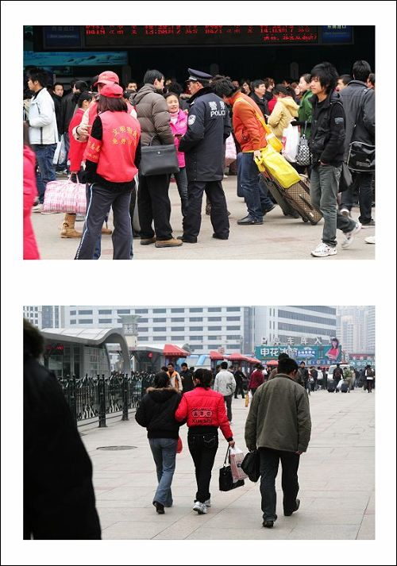

城区．人
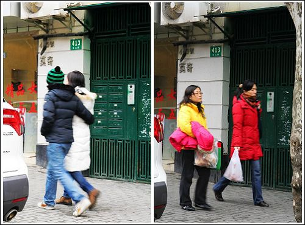

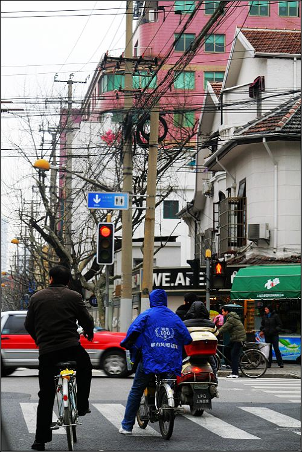

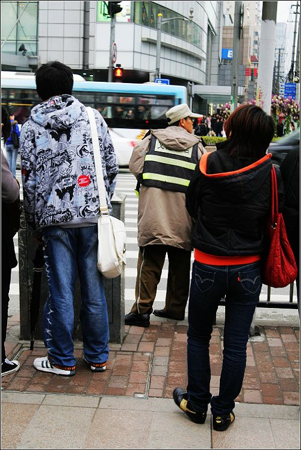


太不照顾OX的情绪了 @ Mar 04, 2009
上个周末，从上海开车到家已经是周日凌晨一点多钟。
把车停进车位，发现隔壁车位上停了一辆黑色卡宴 Turbo S，没上牌，新车的光泽在黑夜中闪烁着诱人的光芒。之前这个邻居开一辆黑色的沃尔沃S80，现在添加了一头大怪兽，4.8T 550马力 V8，0-100加速 4.8秒......
太不照顾OX的情绪了，要OX每天自惭形秽停在怪兽旁边么？
太不照顾有理想的年轻人了，一下子买235万的车，显得俺们的理想那么的可怜~颤抖！
甲：“借你把刀去划漆。”
乙：“在他旁边停个拖拉机，冒黑烟、烧劈柴、动静特大那种，每天热车半小时。”
丙：“把OX停到自行车库里。”
丁：“颤抖的原因是理想那么远，现实这么近。”

上海．橱窗 @ Mar 02, 2009
私人店面，橱窗里有张旧时理发店理发用的椅子，80年代常常能见着的，看到它，就想到热气腾腾跗面的毛巾，师傅手上的剃头刀在绷带上来回打磨的情形...如今这张椅子象古董一样放置在橱窗里了。

路过一个艺术画廊，门面非常小，被里面屹立着的雕塑所吸引，残缺却充满力量，复杂的对抗与挣扎？不屈不饶，痛苦的坚持？畸形的美？绝望？


看话剧 @ Mar 02, 2009
上海大剧院

终于等来我第一场要看的话剧《两只狗的生活意见》，已经是台上演员的第291场。
幸好提前买的票，门口的黄牛票要400一张，简直...欺负外地人么~

剧院外的广告牌

常言道：“演戏的是疯子，看戏的是傻子。”这两位演员估计演的很过瘾，那吐沫、那表情....满场飞呐，演得我坐在下面心里也直喊过瘾。不过两位演员演到291场，他们会是什么感觉？我特喜欢那个瘦子演员，好象叫刘晓晔，因为他的眼睛够小，表情够匪气。
看这幕话剧时，我联想到我们的周围有90%的人人格分裂，如果做话剧演员就挺好，可以将现实中分裂的那部分合理地在舞台上发泄出来，无论台上如何淋漓尽致地疯狂，那都是艺术，卸了妆还是一个社会标准下的正常人。

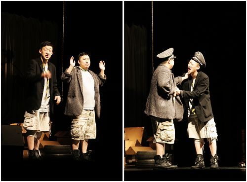
除了唱歌，演员讲台词没用话筒，剧院不大，上下三层都坐满了。演员的台词功底扎实，吐沫象“喷”........泉一样随着台词喷射在灯光下，真TM带劲！这次我坐在一楼第二排，有那么点小偏。演员与观众还有互动呢，两演员下舞台抢观众的背包、钱包和外套，演着演着突然停下来问候一下场内走动或迟到的观众，不过我觉得大部分被骚扰的观众表现的比较“搓”，扭扭捏捏。
我把自己的包藏在身后，把书垫在屁股底下，然后盼望着两演员能来骚扰骚扰我这个伪文艺青年，可是，一直到演出结束，我这小偏的座位也没被骚扰到，NND。

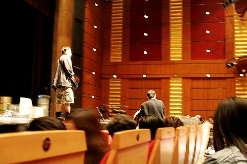
来福想象着他如何悲壮而惨烈的死去，鲜血如何喷洒在四方，他用手枪指着自己的脑袋，从生到死演练着...生死过程变得滑稽而渺小。

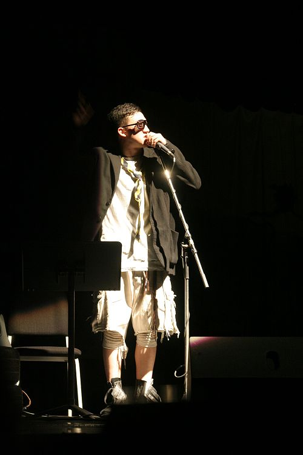
两只有理想有抱负的狗，返乡途中。
这是用喜剧形式表达的悲剧么？

上海大剧院在搞群星慈善会，外面的“迷”们大多数是小女生，还带着迎接自己偶像的道具。而隔壁的中剧场即将演出《两只狗的生活意见》。

上海．武康路 @ Mar 02, 2009
不到上海，不知道自己有多穷。
到了上海的武康路，自个儿就是一穷光蛋了。
上海的武康路与南京宁海路相似，许多老式花园洋房很低调的错落在围墙里面，朴素而安静。最便宜的都是小几千万，最贵的一套500平米带个花园的洋房要1.1亿，晕纳。据说有些洋房花钱都买不到，这哪里是有钱人住的房子，而是资本家住的地方。那些洋房看起来一点不起眼，不细心看很容易就错过了。也有些72家房客的普通民宅，有些被有钱人动迁下来了。那些洋房看着很不起眼，但都是张爱玲式的公寓，陈丹燕笔下的小楼。有些是市府的，离休干部的，上海的风花雪月，基本都在那一带了。
有个朋友说：“几千万不够在上海买房子，不如移民加拿大吃利息。”
我在想卖房子的人得缴多少税给政府啊？
嗨，做白日梦的和瞎操心的碰到一起，也只能站在围墙外面看看。


上海街道 @ Mar 02, 2009
仅半天时间，随意地拍摄，回家翻看相片，却看到与以往不同的上海。
上海和南京一样依然是阴雨天，天色灰蒙蒙的，这座电话亭让人眼前一亮；
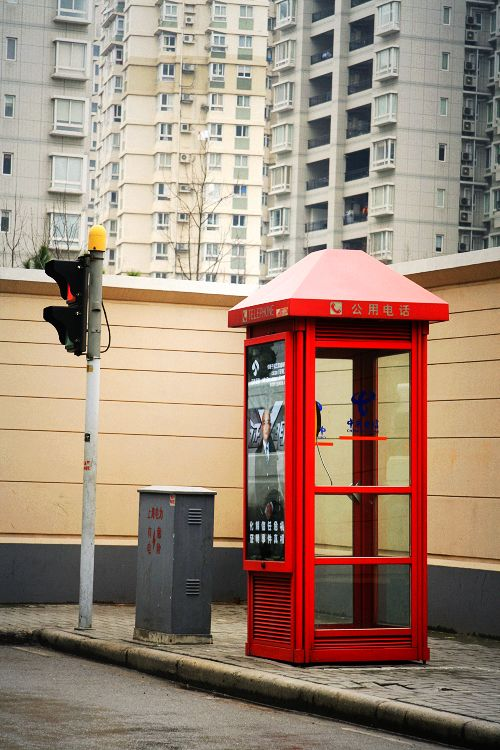
《收获》杂志社居然在这里，09年我又开始续订《收获》杂志了。
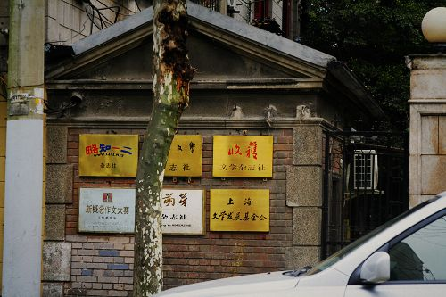
写着“苔青”的店门禁闭着，因此，苔青于我就是空白的茫然；

生锈的门把手，又好象是门牌号码？
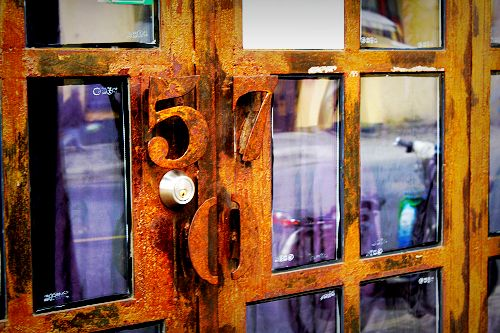
两扇黑油油的大门虚掩着，里面别有洞天；
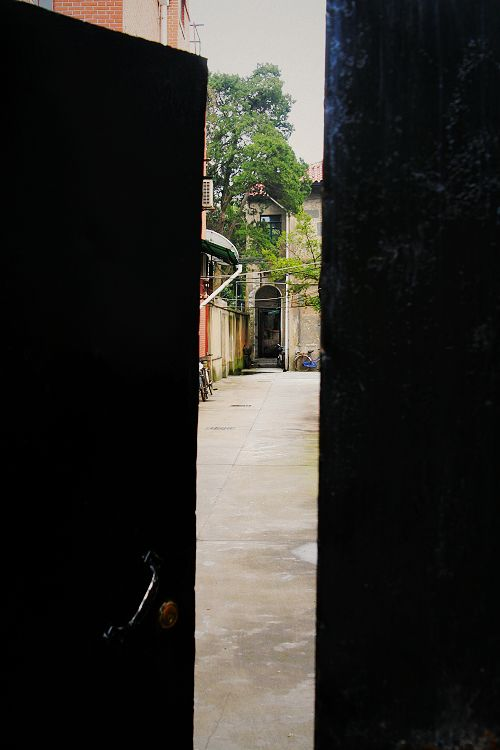
好可爱的信箱，有点欧式的感觉，真不知是哪个年代的东西了？

这是一间家具设计店的大门；

拥挤的街道上忽然出现这样一幕风景，是不是有些诧异？那里面通向的是什么样的院落呢？


小街道的墙壁被刷上鲜亮的色彩，连窗户外的围栏拐角也被细心地包上了棉布。
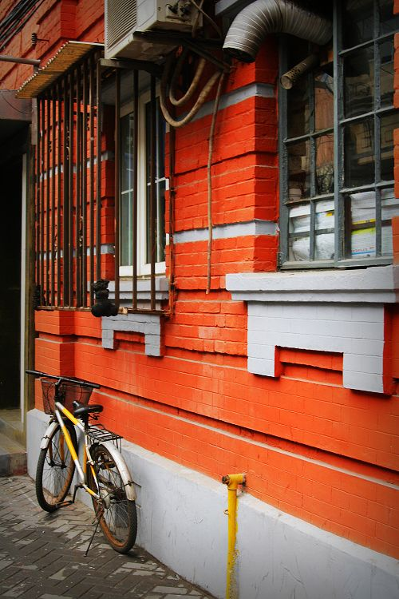
消防栓？
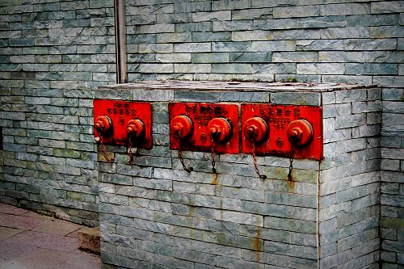
这防护也能想出来？真是PF。
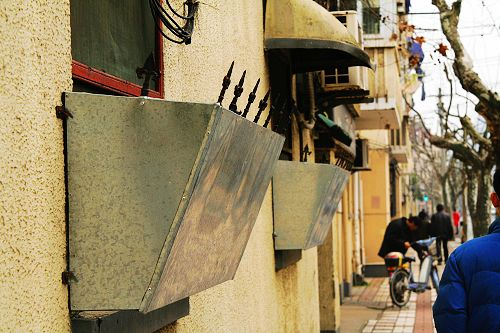